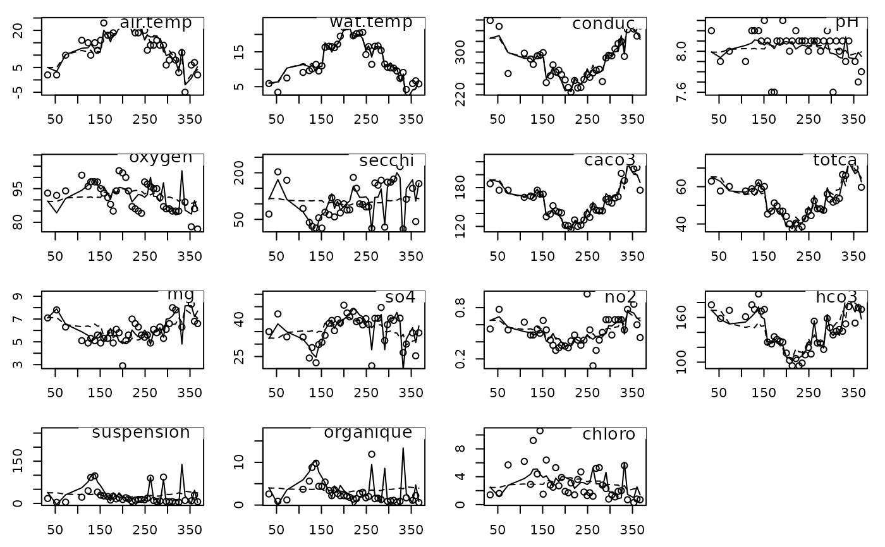

Reconstitution of Data from a Duality Diagram
reconst.RdGeneric Function for the reconstitution of data from a principal component analysis or a correspondence analysis
Usage
reconst (dudi, ...)
# S3 method for class 'pca'
reconst(dudi, nf = 1, ...)
# S3 method for class 'coa'
reconst(dudi, nf = 1, ...)References
Gabriel, K.R. (1978) Least-squares approximation of matrices by additive and multiplicative models. Journal of the Royal Statistical Society, B , 40, 186–196.
Author
Daniel Chessel
Anne-Béatrice Dufour anne-beatrice.dufour@univ-lyon1.fr
Examples
data(rhone)
dd1 <- dudi.pca(rhone$tab, nf = 2, scann = FALSE)
rh1 <- reconst(dd1, 1)
rh2 <- reconst(dd1, 2)
par(mfrow = c(4,4))
par(mar = c(2.6,2.6,1.1,1.1))
for (i in 1:15) {
plot(rhone$date, rhone$tab[,i])
lines(rhone$date, rh1[,i], lty = 2)
lines(rhone$date, rh2[,i], lty = 1)
ade4:::scatterutil.sub(names(rhone$tab)[i], 2, "topright")}
data(chats)
chatsw <- data.frame(t(chats))
chatscoa <- dudi.coa(chatsw, scann = FALSE)
model0 <- reconst(chatscoa, 0)
round(model0,3)
#> age1 age2 age3 age4 age5 age6 age7 age8
#> f0 6.285 6.638 4.379 2.331 1.624 1.059 1.130 1.554
#> f12 11.816 12.480 8.232 4.381 3.054 1.992 2.124 2.921
#> f34 30.924 32.661 21.542 11.466 7.992 5.212 5.559 7.644
#> f56 14.331 15.136 9.983 5.314 3.703 2.415 2.576 3.542
#> f78 13.828 14.605 9.633 5.127 3.573 2.331 2.486 3.418
#> f9a 8.799 9.294 6.130 3.263 2.274 1.483 1.582 2.175
#> fbc 1.760 1.859 1.226 0.653 0.455 0.297 0.316 0.435
#> fcd 1.257 1.328 0.876 0.466 0.325 0.212 0.226 0.311
round(chisq.test(chatsw)$expected,3)
#> Warning: Chi-squared approximation may be incorrect
#> age1 age2 age3 age4 age5 age6 age7 age8
#> f0 6.285 6.638 4.379 2.331 1.624 1.059 1.130 1.554
#> f12 11.816 12.480 8.232 4.381 3.054 1.992 2.124 2.921
#> f34 30.924 32.661 21.542 11.466 7.992 5.212 5.559 7.644
#> f56 14.331 15.136 9.983 5.314 3.703 2.415 2.576 3.542
#> f78 13.828 14.605 9.633 5.127 3.573 2.331 2.486 3.418
#> f9a 8.799 9.294 6.130 3.263 2.274 1.483 1.582 2.175
#> fbc 1.760 1.859 1.226 0.653 0.455 0.297 0.316 0.435
#> fcd 1.257 1.328 0.876 0.466 0.325 0.212 0.226 0.311
chisq.test(chatsw)$statistic
#> Warning: Chi-squared approximation may be incorrect
#> X-squared
#> 74.53507
sum(((chatsw-model0)^2)/model0)
#> [1] 74.53507
effectif <- sum(chatsw)
sum(chatscoa$eig)*effectif
#> [1] 74.53507
model1 <- reconst(chatscoa, 1)
round(model1, 3)
#> age1 age2 age3 age4 age5 age6 age7 age8
#> f0 7.450 7.167 4.164 2.102 1.381 0.892 0.658 1.187
#> f12 14.896 13.877 7.665 3.777 2.411 1.548 0.876 1.951
#> f34 40.924 37.196 19.701 9.505 5.905 3.771 1.505 4.493
#> f56 15.760 15.784 9.720 5.033 3.405 2.209 1.997 3.092
#> f78 6.961 11.490 10.897 6.474 5.006 3.320 5.270 5.582
#> f9a 2.776 6.562 7.239 4.444 3.531 2.351 4.024 4.073
#> fbc 0.063 1.089 1.538 0.985 0.809 0.541 1.004 0.970
#> fcd 0.171 0.835 1.076 0.679 0.551 0.368 0.666 0.653
sum(((chatsw-model1)^2)/model0)
#> [1] 31.68349
sum(chatscoa$eig[-1])*effectif
#> [1] 31.68349
